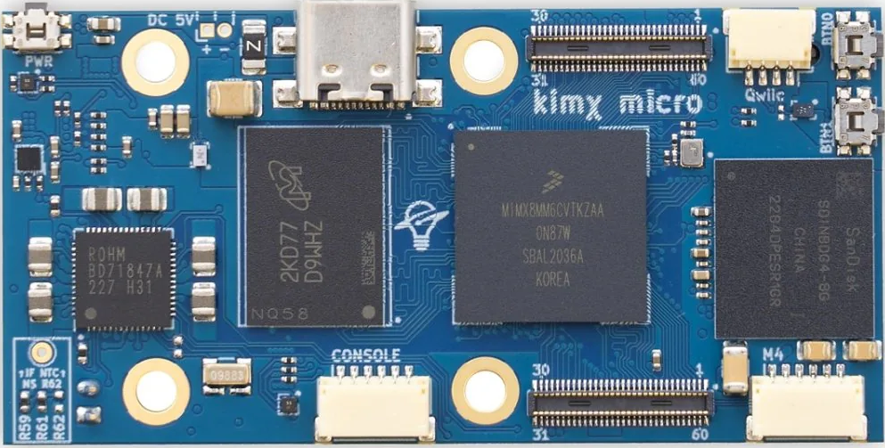

This template lets you create lid expansion boards for the [kimχ micro i.MX8M Mini SBC](https://labs.groupge> This project should include everything you need to make an expansion board, including an eeprom that can be used to identify your lid and automatically load the correct configuration files (with some software work to support this).
